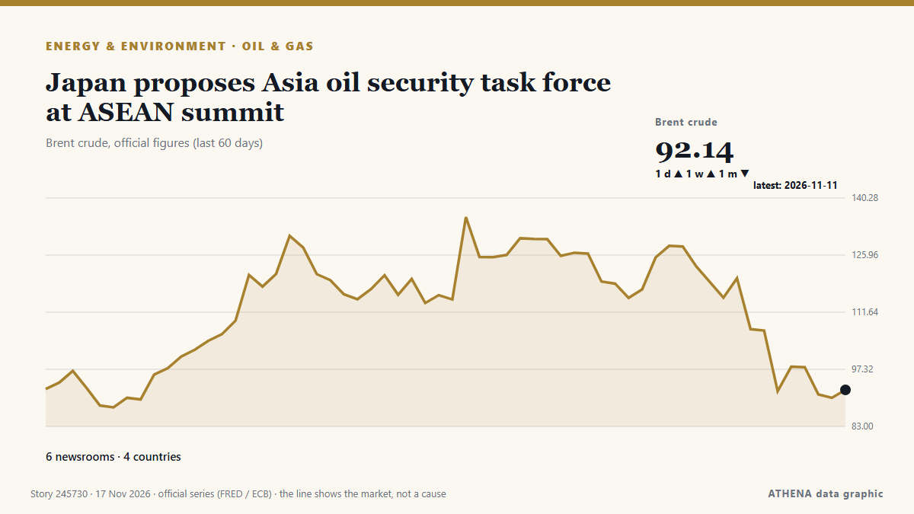

Oil & gas
SponsoredPresented by  Cybernetics and Artificial Intelligence Lab Welcome to the Cybernetics and Artificial Intelligence Laboratory, established at the Department of Business Administration of the National and Kapodistrian University of Athens. The lab is headed by Professor Dimitrios Thomakos. The lab aims to do research that can be published in top venues. Our research uses tools and methods of Artificial Intelligence, and lies in the following areas: - Forecasting - Decision making - Cyber security - Finance We are always looking forward to collaborating with exceptional students!
Cybernetics and Artificial Intelligence Lab Welcome to the Cybernetics and Artificial Intelligence Laboratory, established at the Department of Business Administration of the National and Kapodistrian University of Athens. The lab is headed by Professor Dimitrios Thomakos. The lab aims to do research that can be published in top venues. Our research uses tools and methods of Artificial Intelligence, and lies in the following areas: - Forecasting - Decision making - Cyber security - Finance We are always looking forward to collaborating with exceptional students!
| 4 Nov | 1 |
|---|---|
| 5 Nov | 0 |
| 6 Nov | 0 |
| 7 Nov | 0 |
| 8 Nov | 0 |
| 9 Nov | 0 |
| 10 Nov | 0 |
| 11 Nov | 0 |
| 12 Nov | 2 |
| 13 Nov | 3 |
| 14 Nov | 1 |
| 15 Nov | 5 |
| 16 Nov | 10 |
| 17 Nov | 2 |

Japan proposes Asia oil security task force at ASEAN summit
Japan on Tuesday proposed creating a task force to coordinate cooperation in Asia on oil stockpiling… from BusinessWorld
Oil prices fall on expectations of coming supply surplus
Oil prices fell on Monday on expectations of a supply surplus as shipments from the Middle East through the Strait of Hormuz have nearly returned to pre-war levels and the US took steps to support… from MyJoyOnline
U.S. crude oil declines to $85 a barrel on recovering Middle East exports
Oil prices are falling as forecasts project a surplus in oil in the fourth quarter. from CNBC World
China Turns to Iraqi Oil as US Blockade Disrupts Iranian Supplies
BEIJING, Nov 16 : Chinese independent oil refiners are increasingly turning to Iraqi crude to replace Iranian supplies disrupted by the US naval blockade of Iran, while rising pric... from Arab Times
Dangote Sinotruk rolls out first locally assembled electric trucks
[This Day] Dangote Sinotruk West Africa Limited has rolled out Nigeria's first locally assembled heavy-duty electric truck, marking a historic milestone in the country's automotive industry and… from AllAfrica
ExxonMobil starts Uaru production, lifting Guyana capacity to 1.1 MMbpd
ExxonMobil has started production at Uaru, its fifth Stabroek development offshore Guyana. from World Oil
Canada Backs Higher Woodfibre LNG Output With C$200 Million Investment
Woodfibre LNG is targeting higher export capacity with new Canadian federal backing, adding more potential Western Canadian natural gas demand to the outlook as the terminal advances toward startup… from Natural Gas Intelligence
Iran’s proxy in Iraq rakes in hundreds of millions through oil smuggling
The smuggling, carried out with accomplices among some security and oil officials, has robbed the government of hundreds of millions of dollars dating back to 2021. from The Straits Times
Ukrainian defence forces strike Ilsky Oil Refinery in Russia
Ukrainian military units have successfully targeted a major oil processing facility in southern Russia, disrupting fuel supplies intended for the Russian forces on the front line. from Ukrainska Pravda (English)
Ibaizabal, TotalEnergies name LNG bunkering vessel in China
Spanish shipowner Ibaizabal and French energy giant TotalEnergies have named the first of two 18,600-cbm LNG bunkering vessels at China's Hudong-Zhonghua. from LNG Prime
Iran claims supertanker carrying 2mil barrels of oil sank in Hormuz
TEHERAN: Iran’s Revolutionary Guards said Sunday that a supertanker carrying over two million barrels of oil had sunk after it struck a mine and caught fire in the Strait of Hormuz. from New Straits Times
Energos awards FSRU conversion gig to Hanwha Power
US-based Energos Infrastructure, controlled by asset manager Apollo, has awarded a turnkey contract to Hanwha Power, part of South Korean conglomerate Hanwha, to convert an existing LNG carrier into… from LNG Prime
UK Imports £1.73bn Crude, Refined Products, Gas from Nigeria in 12 Months
Three energy commodities account for 91.8% of total imported goods UK’s white products’ imports rise by over 100% on Dangote refinery’s impact Nigeria ranks 39th among Britain’s trading partners… from ThisDay (Nigeria)
Ugandan Govt Woos Dangote to Invest in Nation’s Oil Refining, Fertiliser, Salt Production Sectors
*’We want him to partner with Uganda in unlocking full potential of our economy,’ officials say The Government of Uganda has approached billionaire industrialist and Africa’s richest man, Alhaji Aliko. from ThisDay (Nigeria)
Ukraine Strikes Samara Urals Oil Hub and Lipetsk-2 Airbase
The General Staff of the Armed Forces of Ukraine announced on Nov. from Kyiv Post
US diesel below $6 a gallon at 2-month low on easing tensions, weaker demand
NEW YORK: US diesel prices fell below $6 a gallon on average on Saturday after two months above that threshold, retreating from record highs as easing geopolitical tensions and seasonal demand… from Business Recorder
Iraq PM sacks officials over oil smuggling in pro-Iran group bastion
The Iraqi Prime Minister dismissed nine officials following an investigation into oil smuggling linked to the Iran-backed Kataeb Hezbollah group. from Arab News
‘Crude but viable device’ made safe in Dublin
A "crude but viable" device found at a building in Merrion Square today has been made safe, gardaí have said. from RTÉ News